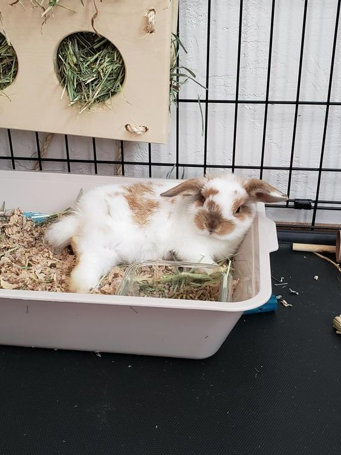

Poradnik dla przyszłych i obecnych opiekunów 🐰

Higiena królika jest bardzo ważna dla jego zdrowia i samopoczucia. Choć króliki są zwierzętami czystymi i same dbają o swoją sierść, wymagają także wsparcia ze strony opiekuna. Królika powinno się nauczyć korzystania z kuwety tzw. kuwetowania, jest to dość proste do nauki.
Miejsce, w którym przebywa królik, powinno być regularnie sprzątane.
Czyste otoczenie zapobiega chorobom i sprawia, że królik czuje się komfortowo.
Króliki same dbają o swoją sierść, ale w okresie linienia warto je delikatnie wyczesywać, aby usunąć martwe włosy.
Zapobiega to połykaniu sierści, które może prowadzić do problemów trawiennych.
Pazury królika należy regularnie kontrolować i w razie potrzeby przycinać. Zbyt długie mogą utrudniać poruszanie się.
Zęby królika rosną przez całe życie, dlatego ważne jest zapewnienie mu odpowiedniego jedzenia, które je ściera, np. siana.
Króliki nie powinny być kąpane. Może to być dla nich bardzo stresujące i niebezpieczne.
W razie zabrudzenia lepiej użyć wilgotnej ściereczki i delikatnie oczyścić futerko.